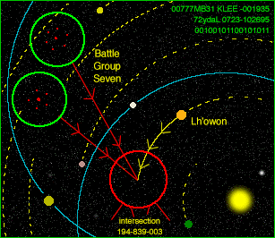

WARNING: CORE OS (AF44+2DEB) MOD DATE LATER THAN CURRENTDATE/TIME
***MESSAGE RECEIVED***
Aleph One est la suite du moteur de jeu de Marathon 2 développé par Bungie. C'est un projet open source qui permet de faire fonctionner la trilogie Marathon sur la majorité des ordinateurs récents.
 Le projet a vu le jour en janvier 2000 à la suite de la publication du moteur de Marathon 2 par Bungie.
Aleph One permet de faire fonctionner les jeux Marathon 2 et Marathon Infinity originaux, mais pas le premier Marathon dont le moteur était différent, mais une version de celui-ci, M1A1, a été développée pour fonctionner sous Aleph One.
Aleph One fonctionne sur de nombreux système d'exploitation: Mac OS X, Mac OS 9, Windows, Linux, BSD, BeOS x86, BeOS PPC, etc. La dernière version stable est datée du 22 janvier 2005.
Lien de téléchargement: https://alephone.lhowon.org/
***END MESSAGE***